Visual Studio Code 中的 Flask 教程
Flask 是一个轻量级的 Python Web 框架，提供了 URL 路由和页面渲染的基础功能。
Flask 被称为"微型"框架，因为它不直接提供表单验证、数据库抽象、认证等功能。这些功能由名为 Flask 扩展的特殊 Python 包提供。这些扩展与 Flask 无缝集成，看起来就像是 Flask 本身的一部分。例如，Flask 不提供页面模板引擎，但安装 Flask 会默认包含 Jinja 模板引擎。为了方便，我们通常将这些默认功能视为 Flask 的一部分。
在本 Flask 教程中，你将创建一个包含三个页面的简单 Flask 应用，这些页面使用一个通用的基础模板。在此过程中，你将体验 Visual Studio Code 的多项功能，包括使用终端、编辑器、调试器、代码片段等。
本 Flask 教程的完整代码项目可以在 GitHub 上找到：python-sample-vscode-flask-tutorial。
如果遇到任何问题，你可以在 Python 扩展讨论 Q&A 中搜索答案或提问。
先决条件
要成功完成本 Flask 教程，你必须完成以下步骤（与 通用 Python 教程 中的步骤相同）：
- 安装 Python 扩展。
- 安装 Python 3 版本（本教程基于此版本编写）。选项包括：
- （所有操作系统）从 python.org 下载；通常使用页面上首先出现的 Download 按钮。
- （Linux）内置的 Python 3 安装即可正常工作，但要安装其他 Python 包，你必须在终端中运行
sudo apt install python3-pip。 - （macOS）通过 Homebrew 在 macOS 上安装，使用
brew install python3。 - （所有操作系统）从 Anaconda 下载（用于数据科学目的）。
path 来检查位置。如果 Python 解释器的文件夹未包含在内，请打开 Windows 设置，搜索"环境"，选择编辑账户的环境变量，然后编辑 Path 变量以包含该文件夹。
为 Flask 教程创建项目环境
在本节中，你将创建一个虚拟环境并在其中安装 Flask。使用虚拟环境可以避免将 Flask 安装到全局 Python 环境中，并让你精确控制应用所使用的库。
Python 环境扩展 支持多种环境类型，包括 venv、conda、poetry 等。本教程使用 venv，因为它是 Python 内置的，不需要额外工具。其他环境类型的步骤类似——详见创建环境。
- 在文件系统中，为本教程创建一个文件夹，例如
hello_flask。 - 在 VS Code 中打开此文件夹，方法是在终端中导航到该文件夹并运行
code .，或者运行 VS Code 并使用 File > Open Folder 命令。 - 使用 Python: Create Environment 命令创建虚拟环境：
- 打开命令面板（
kb(workbench.action.showCommands)）- 搜索并选择 Python: Create Environment
- 选择 Venv 创建 venv 环境
- 选择一个 Python 解释器用于该环境
- 打开命令面板（
VS Code 会在工作区中创建一个 .venv 文件夹，并自动选择新环境。
[!TIP]
你也可以使用 Python 侧边栏创建环境。展开 Environment Managers 并选择 + 按钮进行快速创建，该功能使用合理的默认设置。
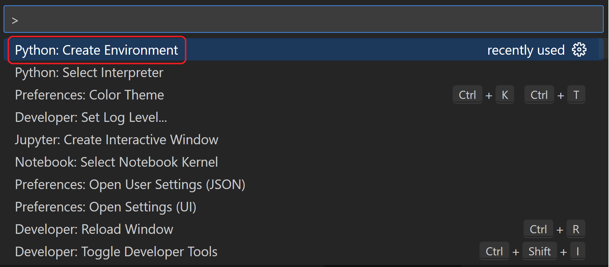
- 使用以下方法之一在虚拟环境中安装 Flask：
使用包管理界面：
- 在 Python 侧边栏中，展开 Environment Managers
- 右键单击你的
.venv环境并选择 Manage Packages- 搜索
flask并选择 Install
- 搜索
- 右键单击你的
使用终端：
运行 Terminal: Create New Terminal（kb(workbench.action.terminal.new)）从命令面板，这会创建一个终端并自动激活虚拟环境。然后运行：
python -m pip install flask你现在有了一个自包含的环境，可以开始编写 Flask 代码了。VS Code 会在你打开新终端时自动激活环境。如果你在 VS Code 外打开单独的命令提示符或终端，可以通过运行 source .venv/bin/activate（Linux/macOS）或 .venv\Scripts\Activate.ps1（Windows）来激活环境。当命令提示符开头显示 (.venv) 时，说明环境已激活。
创建并运行一个最小的 Flask 应用
- 在 VS Code 中，在项目文件夹中创建一个名为
app.py的新文件，可以使用菜单中的 File > New，按kbstyle(Ctrl+N)，或使用资源管理器视图中的新文件图标（如下所示）。
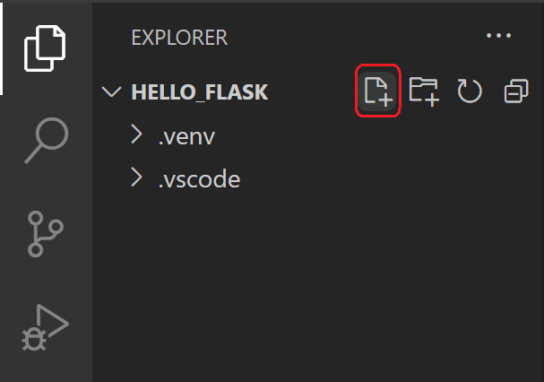
- 在
app.py中，添加代码以导入 Flask 并创建 Flask 对象的实例。如果你手动输入以下代码（而不是复制粘贴），可以观察到 VS Code 的 IntelliSense 和自动补全：from flask import Flask app = Flask(__name__) - 同样在
app.py中，添加一个返回内容（本例中为一个简单字符串）的函数，并使用 Flask 的app.route装饰器将 URL 路由/映射到该函数：@app.route("/") def home(): return "Hello, Flask!"Tip: 你可以根据需要在同一个函数上使用多个装饰器，每行一个，以将多个不同路由映射到同一个函数。
- 保存
app.py文件（kb(workbench.action.files.save)）。 - 在集成终端中，通过输入
python -m flask run运行应用，这将启动 Flask 开发服务器。开发服务器默认查找app.py。运行 Flask 时，你应该会看到类似以下的输出：(.venv) D:\py\\hello_flask>python -m flask run * Environment: production WARNING: Do not use the development server in a production environment. Use a production WSGI server instead. * Debug mode: off * Running on http://127.0.0.1:5000/ (Press CTRL+C to quit)
如果出现找不到 Flask 模块的错误，请确保已在虚拟环境中运行 python -m pip install flask，如上一节末尾所述。
另外，如果要在不同的 IP 地址或端口上运行开发服务器，请使用 host 和 port 命令行参数，例如 --host=0.0.0.0 --port=80。
- 要在默认浏览器中打开渲染后的页面，请
kbstyle(Ctrl+click)终端中的http://127.0.0.1:5000/URL。
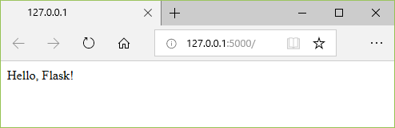
- 注意，当你访问像 / 这样的 URL 时，调试终端中会显示一条消息，显示 HTTP 请求：
127.0.0.1 - - [11/Jul/2018 08:40:15] "GET / HTTP/1.1" 200 - - 在终端中使用
kbstyle(Ctrl+C)停止应用。Tip: 当使用不同于
app.py的文件名（如webapp.py）时，你需要定义一个名为 FLASK_APP 的环境变量，并将其值设置为你选择的文件。Flask 的开发服务器会使用 FLASK_APP 的值而不是默认的app.py。更多信息，请参阅 Flask 命令行界面。在调试器中运行应用
调试让你有机会在特定代码行暂停正在运行的程序。当程序暂停时，你可以检查变量、在 Debug Console 面板中运行代码，以及利用调试中描述的其他功能。运行调试器还会在调试会话开始前自动保存所有已修改的文件。
开始之前：确保已使用终端中的 kbstyle(Ctrl+C) 停止了上一节末尾运行的应用。如果你在一个终端中让应用继续运行，它会继续占用端口。因此，当你使用同一端口在调试器中运行应用时，原始运行的应用会处理所有请求，你将在被调试的应用中看不到任何活动，程序也不会在断点处停止。换句话说，如果调试器似乎不工作，请确保没有其他应用实例仍在运行。
- 将
app.py的内容替换为以下代码，该代码添加了第二个路由和函数，你可以在调试器中单步执行：import re from datetime import datetime from flask import Flask app = Flask(__name__) @app.route("/") def home(): return "Hello, Flask!" @app.route("/hello/<name>") def hello_there(name): now = datetime.now() formatted_now = now.strftime("%A, %d %B, %Y at %X") # Filter the name argument to letters only using regular expressions. URL arguments # can contain arbitrary text, so we restrict to safe characters only. match_object = re.match("[a-zA-Z]+", name) if match_object: clean_name = match_object.group(0) else: clean_name = "Friend" content = "Hello there, " + clean_name + "! It's " + formatted_now return content
新 URL 路由 /hello/ 使用的装饰器定义了一个端点 /hello/，它可以接受任何附加值。路由中 < 和 > 内的标识符定义了传递给函数并可在代码中使用的变量。
URL 路由区分大小写。例如，路由 /hello/ 与 /Hello/ 不同。如果你希望同一个函数处理两者，请为每个变体使用装饰器。
如代码注释中所述，始终过滤用户提供的任意信息，以避免对你的应用进行各种攻击。在本例中，代码将 name 参数过滤为仅包含字母，这可以避免注入控制字符、HTML 等。（在下一节使用模板时，Flask 会自动过滤，你不需要此代码。）
- 在
hello_there函数的第一行代码（now = datetime.now()）设置断点，可以通过以下任一方式：- 将光标放在该行上，按
kb(editor.debug.action.toggleBreakpoint)，或- 将光标放在该行上，选择 Run > Toggle Breakpoint 菜单命令，或
- 直接单击行号左侧的边距（悬停时会显示一个淡红色圆点）。
- 将光标放在该行上，按
断点在左边距中显示为红色圆点：
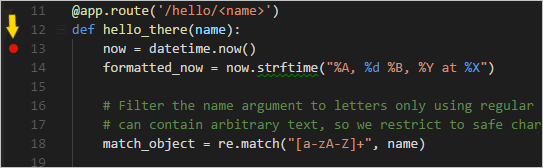
- 切换到 VS Code 中的 Run and Debug 视图（使用左侧活动栏或
kb(workbench.view.debug)）。你可能会看到消息 "To customize Run and Debug create a launch.json file"。这意味着你还没有包含调试配置的launch.json文件。如果你单击 create a launch.json file 链接，VS Code 可以为你创建该文件：

- 选择该链接，VS Code 将提示你选择调试配置。从下拉菜单中选择 Flask，VS Code 会用一个 Flask 运行配置填充一个新的
launch.json文件。launch.json文件包含多个调试配置，每个配置都是configuration数组中的一个独立 JSON 对象。 - 向下滚动并检查配置，其名称为 "Python: Flask"。此配置包含
"module": "flask",，告诉 VS Code 在启动调试器时使用-m flask运行 Python。它还在env属性中定义了 FLASK_APP 环境变量来标识启动文件，默认为app.py，但允许你轻松指定不同的文件。如果要更改主机和/或端口，可以使用args数组。{ "name": "Python Debugger: Flask", "type": "debugpy", "request": "launch", "module": "flask", "env": { "FLASK_APP": "app.py", "FLASK_DEBUG": "1" }, "args": [ "run", "--no-debugger", "--no-reload" ], "jinja": true, "justMyCode": true },Note: 如果配置中的
env条目包含"FLASK_APP": "${workspaceFolder}/app.py"，请按上述方式将其更改为"FLASK_APP": "app.py"。否则，你可能会遇到类似 "Cannot import module C" 的错误消息，其中 C 是你的项目文件夹所在的驱动器号。Note: 创建
launch.json后，编辑器中会出现一个 Add Configuration 按钮。该按钮显示一个附加配置列表，可以添加到配置列表的开头。（Run > Add Configuration 菜单命令执行相同操作。） - 保存
launch.json（kb(workbench.action.files.save)）。在调试配置下拉列表中选择 Python: Flask 配置。
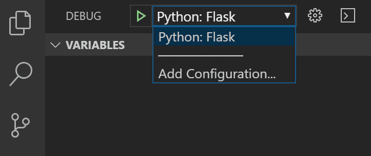
- 通过选择 Run > Start Debugging 菜单命令，或选择列表旁边的绿色 Start Debugging 箭头（
kb(workbench.action.debug.continue)）来启动调试器：
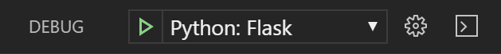
注意状态栏颜色变化以指示正在调试：
VS Code 中还会出现一个调试工具栏（如下所示），包含以下顺序的命令：Pause（或 Continue，kb(workbench.action.debug.continue)）、Step Over（kb(workbench.action.debug.stepOver)）、Step Into（kb(workbench.action.debug.stepInto)）、Step Out（kb(workbench.action.debug.stepOut)）、Restart（kb(workbench.action.debug.restart)）和 Stop（kb(workbench.action.debug.stop)）。有关每个命令的说明，请参阅 VS Code 调试。
- 输出出现在 "Python Debug Console" 终端中。
kbstyle(Ctrl+click)该终端中的http://127.0.0.1:5000/链接，在浏览器中打开该 URL。在浏览器的地址栏中，导航到http://127.0.0.1:5000/hello/VSCode。在页面渲染之前，VS Code 在你设置的断点处暂停程序。断点上的小黄色箭头表示这是要运行的下一行代码。
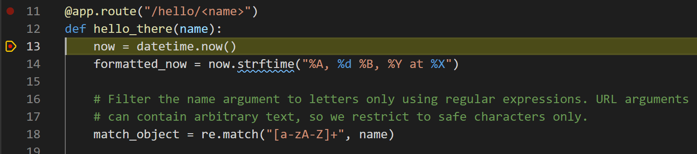
- 使用 Step Over 执行
now = datetime.now()语句。 - 在 VS Code 窗口的左侧，你会看到 Variables 窗格，其中显示局部变量（如
now）以及参数（如name）。下面是 Watch、Call Stack 和 Breakpoints 窗格（详情请参阅 VS Code 调试）。在 Locals 部分，尝试展开不同的值。你还可以双击值（或使用kb(debug.setVariable)）来修改它们。然而，修改变量如now可能会破坏程序。开发人员通常只在代码一开始没有产生正确值时才会进行更改。
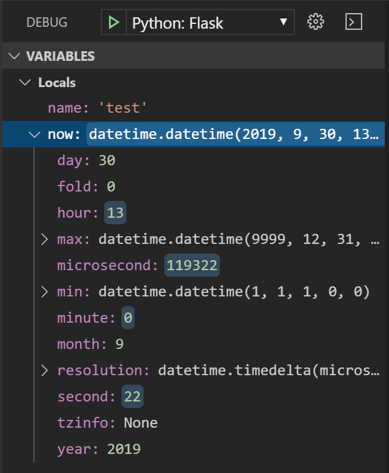
- 当程序暂停时，Debug Console 面板（不同于终端面板中的 "Python Debug Console"）允许你使用程序的当前状态试验表达式和尝试代码片段。例如，一旦你单步跳过
now = datetime.now()这一行，你可以尝试不同的日期/时间格式。在编辑器中，选择读取now.strftime("%A, %d %B, %Y at %X")的代码，然后右键单击并选择 Evaluate in Debug Console，将该代码发送到调试控制台，在那里运行：now.strftime("%A, %d %B, %Y at %X") 'Wednesday, 31 October, 2018 at 18:13:39'Tip: Debug Console 还会显示应用中可能不会出现在终端中的异常。例如，如果在 Run and Debug 视图的 Call Stack 区域看到 "Paused on exception" 消息，请切换到 Debug Console 查看异常消息。
- 将该行复制到调试控制台底部的 > 提示符处，并尝试更改格式：
now.strftime("%a, %d %B, %Y at %X") 'Wed, 31 October, 2018 at 18:13:39' now.strftime("%a, %d %b, %Y at %X") 'Wed, 31 Oct, 2018 at 18:13:39' now.strftime("%a, %d %b, %y at %X") 'Wed, 31 Oct, 18 at 18:13:39' - 如果需要，再单步执行几行代码，然后选择 Continue（
kb(workbench.action.debug.continue)）让程序运行。浏览器窗口会显示结果：
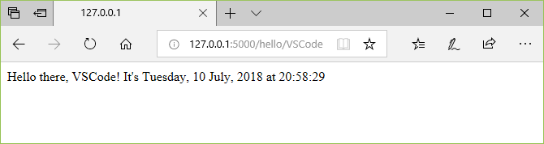
- 更改代码中的行以使用不同的日期时间格式，例如
now.strftime("%a, %d %b, %y at %X")，然后保存文件。Flask 服务器会自动重新加载，这意味着无需重启调试器即可应用更改。刷新浏览器页面以查看更新。 - 完成时关闭浏览器并停止调试器。要停止调试器，请使用 Stop 工具栏按钮（红色方块）或 Run > Stop Debugging 命令（
kb(workbench.action.debug.stop)）。Tip: 为了更容易反复导航到特定 URL（如
http://127.0.0.1:5000/hello/VSCode），可以使用print语句输出该 URL。该 URL 会出现在终端中，你可以使用kbstyle(Ctrl+click)在浏览器中打开它。Go to Definition 和 Peek Definition 命令
在使用 Flask 或任何其他库时，你可能想要检查这些库本身的代码。VS Code 提供了两个方便的快捷命令，可以直接导航到任何代码中类和其他对象的定义：
- Go to Definition 从你的代码跳转到定义对象的代码。例如，在
app.py中，右键单击Flask类（在行app = Flask(__name__)中）并选择 Go to Definition（或使用kb(editor.action.revealDefinition)），这会导航到 Flask 库中的类定义。 - Peek Definition（
kb(editor.action.peekDefinition)，也在右键上下文菜单中）类似，但直接在编辑器中显示类定义（在编辑器窗口中腾出空间以避免遮挡任何代码）。按kbstyle(Escape)关闭速览窗口或使用右上角的 x。
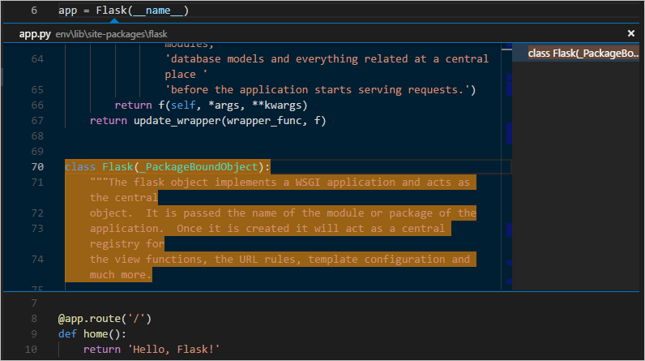
使用模板渲染页面
到目前为止，你在本教程中创建的应用仅从 Python 代码生成纯文本网页。虽然可以直接在代码中生成 HTML，但开发人员通常避免这种做法，因为它会使应用面临跨站脚本攻击（XSS）。例如，在本教程的 hello_there 函数中，人们可能会考虑在代码中格式化输出，如 content = "，其中 Hello there, " + clean_name + "!
"content 的结果直接提供给浏览器。这为攻击者提供了机会，可以在 URL 中放置恶意 HTML（包括 JavaScript 代码），这些代码最终出现在 clean_name 中，从而在浏览器中运行。
更好的做法是使用 templates 将 HTML 完全排除在代码之外，这样你的代码只关心数据值，而不关心渲染。
- 模板是一个 HTML 文件，包含代码在运行时提供的值的占位符。模板引擎负责在渲染页面时进行替换。因此，代码只关心数据值，而模板只关心标记。
- Flask 的默认模板引擎是 Jinja，它在安装 Flask 时会自动安装。该引擎提供灵活的选项，包括自动转义（以防止 XSS 攻击）和模板继承。通过继承，你可以定义一个包含通用标记的基础页面，然后在此基础上添加特定于页面的内容。
在本节中，你将使用模板创建单个页面。在接下来的部分中，你将配置应用以提供静态文件，然后为应用创建多个页面，每个页面都包含来自基础模板的导航栏。
- 在
hello_flask文件夹中，创建一个名为templates的文件夹，这是 Flask 默认查找模板的位置。 - 在
templates文件夹中，创建一个名为hello_there.html的文件，内容如下。此模板包含两个名为 "name" 和 "date" 的占位符，由花括号对\{{和}}界定。如你所见，你也可以直接在模板中包含格式代码：<!DOCTYPE html> <html> <head> <meta charset="utf-8" /> <title>Hello, Flask</title> </head> <body> {%if name %} <strong>Hello there, \{{ name }}!</strong> It's \{{ date.strftime("%A, %d %B, %Y at %X") }}. {% else %} What's your name? Provide it after /hello/ in the URL. {% endif %} </body> </html>Tip: Flask 开发人员经常使用 flask-babel 扩展进行日期格式化，而不是
strftime，因为 flask-babel 会考虑区域设置和时区。 - 在
app.py中，在文件顶部附近导入 Flask 的render_template函数：from flask import render_template - 同样在
app.py中，修改hello_there函数以使用render_template加载模板并应用命名值（并添加一个路由以识别没有名称的情况）。render_template假定第一个参数是相对于templates文件夹的。通常，开发人员将模板命名为与使用它们的函数相同的名称，但匹配名称不是必需的，因为你总是在代码中引用确切的文件名。@app.route("/hello/") @app.route("/hello/<name>") def hello_there(name = None): return render_template( "hello_there.html", name=name, date=datetime.now() )
你可以看到代码现在简单多了，只关心数据值，因为标记和格式都包含在模板中。
- 启动程序（在调试器内部或外部，使用
kb(workbench.action.debug.run)），导航到 /hello/name URL，并观察结果。 - 还尝试导航到 /hello/name URL，使用类似
提供静态文件
静态文件有两种类型。首先是页面模板可以直接引用的文件，如样式表。这些文件可以放在应用的任何文件夹中，但通常放在 static 文件夹中。
第二种类型是你希望在代码中引用的文件，例如当你想实现一个返回静态文件的 API 端点时。为此，Flask 对象包含一个内置方法 send_static_file，它会生成一个响应，其中包含应用 static 文件夹中的静态文件。
以下部分演示了两种类型的静态文件。
在模板中引用静态文件
- 在
hello_flask文件夹中，创建一个名为static的文件夹。 - 在
static文件夹中，创建一个名为site.css的文件，内容如下。输入此代码后，还可以观察 VS Code 为 CSS 文件提供的语法高亮，包括颜色预览：.message { font-weight: 600; color: blue; } - 在
templates/hello_there.html中，在标签之前添加以下行，这将创建对样式表的引用。<link rel="stylesheet" type="text/css" href="\{{ url_for('static', filename='site.css')}}" />
这里使用的 Flask 的 url_for 标签会创建文件的适当路径。因为它可以接受变量作为参数，url_for 允许你以编程方式控制生成的路径（如果需要）。
- 同样在
templates/hello_there.html中，将元素的内容替换为以下标记，该标记使用message样式而不是标签（并且如果仅使用 hello/ URL 而没有名称，也会显示消息）：{%if name %} <span class="message">Hello there, \{{ name }}!</span> It's \{{ date.strftime("%A, %d %B, %Y at %X") }}. {% else %} <span class="message">What's your name? Provide it after /hello/ in the URL.</span> {% endif %} - 运行应用，导航到 /hello/name URL，并观察消息以蓝色渲染。完成时停止应用。
从代码提供静态文件
- 在
static文件夹中，创建一个名为data.json的 JSON 数据文件，内容如下（这些是无意义的示例数据）：{ "01": { "note" : "This data is very simple because we're demonstrating only the mechanism." } } - 在
app.py中，添加一个带有路由 /api/data 的函数，使用send_static_file方法返回静态数据文件：@app.route("/api/data") def get_data(): return app.send_static_file("data.json") - 运行应用并导航到 /api/data 端点，查看返回的静态文件。完成时停止应用。
创建扩展基础模板的多个模板
由于大多数 Web 应用有多个页面，并且这些页面通常共享许多公共元素，开发人员会将这些公共元素分离到一个基础页面模板中，其他页面模板可以扩展该模板（这也称为模板继承）。
此外，由于你可能会创建许多扩展同一模板的页面，因此在 VS Code 中创建一个代码片段会很有帮助，你可以用它快速初始化新的页面模板。代码片段有助于避免繁琐且容易出错的复制粘贴操作。
以下各节将逐步介绍此过程的不同部分。
创建基础页面模板和样式
Flask 中的基础页面模板包含一组页面的所有共享部分，包括 CSS 文件、脚本文件等的引用。基础模板还定义一个或多个 block 标签，扩展基础模板的模板应覆盖这些标签。在基础模板和扩展模板中，block 标签由 {% block 和 {% endblock %} 界定。
以下步骤演示了创建基础模板。
- 在
templates文件夹中，创建一个名为layout.html的文件，内容如下，其中包含名为 "title" 和 "content" 的块。如你所见，标记定义了一个简单的导航栏结构，包含指向 Home、About 和 Contact 页面的链接，你将在后面的部分中创建这些页面。每个链接再次使用 Flask 的url_for标签在运行时为匹配的路由生成链接。<!DOCTYPE html> <html> <head> <meta charset="utf-8" /> <title>{% block title %}{% endblock %}</title> <link rel="stylesheet" type="text/css" href="\{{ url_for('static', filename='site.css')}}" /> </head> <body> <div class="navbar"> <a href="\{{ url_for('home') }}" class="navbar-brand">Home</a> <a href="\{{ url_for('about') }}" class="navbar-item">About</a> <a href="\{{ url_for('contact') }}" class="navbar-item">Contact</a> </div> <div class="body-content"> {% block content %} {% endblock %} <hr/> <footer> <p>© 2018</p> </footer> </div> </body> </html> - 将以下样式添加到
static/site.css中现有 "message" 样式下方，并保存文件。请注意，本教程不尝试演示响应式设计；这些样式只是为了生成一个相当有趣的结果。.navbar { background-color: lightslategray; font-size: 1em; font-family: 'Trebuchet MS', 'Lucida Sans Unicode', 'Lucida Grande', 'Lucida Sans', Arial, sans-serif; color: white; padding: 8px 5px 8px 5px; } .navbar a { text-decoration: none; color: inherit; } .navbar-brand { font-size: 1.2em; font-weight: 600; } .navbar-item { font-variant: small-caps; margin-left: 30px; } .body-content { padding: 5px; font-family:'Segoe UI', Tahoma, Geneva, Verdana, sans-serif; }
你现在可以运行应用，但由于你尚未在任何地方使用基础模板，也未更改任何代码文件，结果与上一步相同。完成其余部分以查看最终效果。
创建代码片段
由于你将在下一节中创建的三个页面扩展 layout.html，创建一个 代码片段 来初始化新的模板文件，其中包含对基础模板的适当引用，可以节省时间。代码片段从单一来源提供一致的代码，避免了从现有代码复制粘贴可能出现的错误。
- 在 VS Code 中，选择 File > Preferences > Configure Snippets。
- 在出现的列表中，选择 html。如果你之前创建过代码片段，该选项可能会显示为列表 Existing Snippets 部分中的 "html.json"。
- VS Code 打开
html.json后，在现有花括号内添加以下条目（未显示的说明性注释描述了详细信息，例如$0行指示 VS Code 在插入代码片段后将光标放在何处）："Flask Tutorial: template extending layout.html": { "prefix": "flextlayout", "body": [ "{% extends \"layout.html\" %}", "{% block title %}", "$0", "{% endblock %}", "{% block content %}", "{% endblock %}" ], "description": "Boilerplate template that extends layout.html" }, - 保存
html.json文件（kb(workbench.action.files.save)）。 - 现在，每当你开始输入代码片段的前缀（如
flext）时，VS Code 会将代码片段作为自动补全选项提供，如下一节所示。你也可以使用 Insert Snippet 命令从菜单中选择代码片段。
有关代码片段的更多信息，请参阅创建代码片段。
使用代码片段添加页面
有了代码片段，你可以快速创建 Home、About 和 Contact 页面的模板。
- 在
templates文件夹中，创建一个名为home.html的新文件。然后开始输入flext，代码片段会作为补全出现：
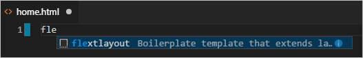
选择补全后，代码片段的代码会出现，光标位于代码片段的插入点：
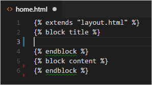
- 在 "title" 块的插入点写入
Home，在 "content" 块中写入Home page for the Visual Studio Code Flask tutorial.
- 在
templates文件夹中，创建about.html，使用代码片段插入样板标记，分别在 "title" 和 "content" 块中插入About us和About page for the Visual Studio Code Flask tutorial.
- 重复上一步创建
templates/contact.html，在两个内容块中使用Contact us和Contact page for the Visual Studio Code Flask tutorial.
- 在
app.py中，为 /about/ 和 /contact/ 路由添加引用各自页面模板的函数。同时修改home函数以使用home.html模板。# Replace the existing home function with the one below @app.route("/") def home(): return render_template("home.html") # New functions @app.route("/about/") def about(): return render_template("about.html") @app.route("/contact/") def contact(): return render_template("contact.html")运行应用
所有页面模板就位后，保存 app.py，运行应用，并打开浏览器查看结果。在页面之间导航，验证页面模板是否正确扩展了基础模板。
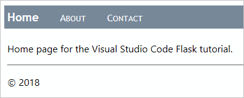
>Note: 如果看不到最新更改，你可能需要对页面进行硬刷新以避免看到缓存文件。
可选活动
以下部分描述了在你的 Python 和 Visual Studio Code 工作中可能有帮助的额外步骤。
为环境创建 requirements.txt 文件
当你通过源代码控制或其他方式共享应用代码时，复制虚拟环境中的所有文件是不合理的，因为接收者总是可以自己重新创建环境。
因此，开发人员通常从源代码控制中忽略虚拟环境文件夹，而是使用 requirements.txt 文件来描述应用的依赖项。
虽然你可以手动创建该文件，但也可以使用 pip freeze 命令根据激活环境中安装的确切库生成该文件：
- 使用 Python: Select Interpreter 命令选择你选择的环境后，运行 Terminal: Create New Terminal 命令（
kb(workbench.action.terminal.new)）打开一个终端，该环境已激活。 - 在终端中，运行
pip freeze > requirements.txt在项目文件夹中创建requirements.txt文件。
任何接收项目副本的人（或任何构建服务器）只需要运行 pip install -r requirements.txt 命令即可重新安装原始环境中的包。（但接收者仍然需要创建自己的虚拟环境。）
Note: pip freeze 会列出你当前环境中安装的所有 Python 包，包括你当前未使用的包。该命令还会列出具有精确版本号的包，你可能希望将其转换为范围以获得更大的灵活性。更多信息，请参阅 pip 命令文档中的需求文件。
重构项目以支持进一步开发
在本 Flask 教程中，所有应用代码都包含在单个 app.py 文件中。为了支持进一步开发并分离关注点，将 app.py 的各个部分重构到单独的文件中是很有帮助的。
- 在项目文件夹中，为应用创建一个文件夹，例如
hello_app，以将其文件与其他项目级文件（如requirements.txt和 VS Code 存储设置和调试配置文件的.vscode文件夹）分开。 - 将
static和templates文件夹移动到hello_app中，因为这些文件夹肯定包含应用代码。 - 在
hello_app文件夹中，创建一个名为views.py的文件，包含路由和视图函数：from flask import Flask from flask import render_template from datetime import datetime from . import app @app.route("/") def home(): return render_template("home.html") @app.route("/about/") def about(): return render_template("about.html") @app.route("/contact/") def contact(): return render_template("contact.html") @app.route("/hello/") @app.route("/hello/<name>") def hello_there(name = None): return render_template( "hello_there.html", name=name, date=datetime.now() ) @app.route("/api/data") def get_data(): return app.send_static_file("data.json") - 在
hello_app文件夹中，创建一个文件__init__.py，内容如下：import flask app = flask.Flask(__name__) - 在
hello_app文件夹中，创建一个文件webapp.py，内容如下：# Entry point for the application. from . import app # For application discovery by the 'flask' command. from . import views # For import side-effects of setting up routes. - 打开调试配置文件
launch.json并按如下方式更新env属性以指向启动对象："env": { "FLASK_APP": "hello_app.webapp" }, - 删除项目根目录中的原始
app.py文件，因为其内容已移入其他应用文件。 - 你的项目结构现在应类似于以下结构：
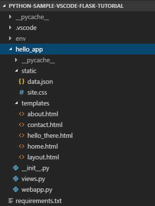
- 再次在调试器中运行应用以确保一切正常。要在 VS Code 调试器外部运行应用，请在终端中执行以下步骤：
- 为
FLASK_APP设置环境变量。在 Linux 和 macOS 上，使用export set FLASK_APP=webapp；在 Windows 上，如果使用 PowerShell，使用$env:FLASK_APP=webapp；如果使用命令提示符，使用set FLASK_APP=webapp。- 导航到
hello_app文件夹，然后使用python -m flask run启动程序。使用容器工具扩展为 Flask 应用创建容器
- 导航到
- 为
Container Tools 扩展使得从 Visual Studio Code 构建、管理和部署容器化应用变得容易。如果你有兴趣学习如何为本教程中开发的 Flask 应用创建 Python 容器，请查看 容器中的 Python 教程，它将指导你如何：
- 创建一个描述简单 Python 容器的
Dockerfile文件。 - 构建、运行和验证 Flask 应用的功能。
- 调试在容器中运行的应用。
如果遇到任何问题，你可以在 Python 扩展讨论 Q&A 中搜索答案或提问。
后续步骤
恭喜你完成了在 Visual Studio Code 中使用 Flask 的演练！
本教程的完整代码项目可以在 GitHub 上找到：python-sample-vscode-flask-tutorial。
由于本教程仅触及了页面模板的皮毛，请参阅 Jinja2 文档了解有关模板的更多信息。模板设计者文档包含模板语言的所有详细信息。你可能还想查看官方 Flask 教程以及 Flask 扩展的文档。
要在生产网站上测试你的应用，请查看教程使用 Docker 容器将 Python 应用部署到 Azure App Service。Azure 还提供了一个标准容器 App Service on Linux，你可以从 VS Code 内部将 Web 应用部署到其中。
你可能还想查看 VS Code 文档中与 Python 相关的以下文章：